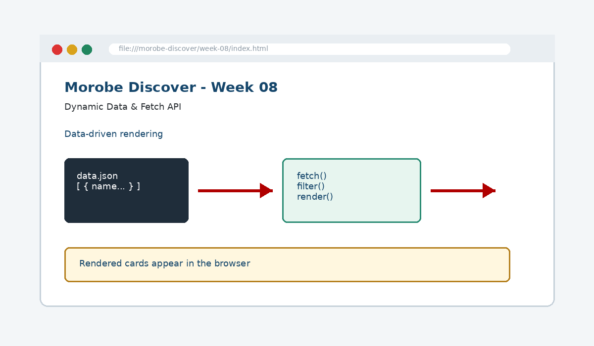

Dynamic Data & Fetch API
Decouple content from structure by loading and rendering dynamic external data.

How this week's learning connects
1. Reading
Build the conceptual foundation and vocabulary for Dynamic Data & Fetch API.
2. Lecture
Inspect the core principle, code patterns and visible browser result.
3. Lab
Complete the guided build tasks with checkpoints, testing and Git evidence.
4. Morobe Discover
Integrate the result into the same project and preserve earlier features.
JSON
Represents structured content independently from HTML.
fetch()
Loads resources asynchronously.
Filtering
Transforms data before rendering it into the interface.
Read the code line by line
const response = await fetch("data/destinations.json");
if (!response.ok) throw new Error("Data failed to load");
const destinations = await response.json();const html = destinations
.map(item => `<article class="card">${item.name}</article>`)
.join("");What it does → Why it works → Where we use it
await fetch(...)
Starts an HTTP request and waits for the response.response.ok
Reports whether the HTTP response was successful.response.json()
Parses the response body as JSON.map(...)
Transforms each data item into a piece of interface markup.join("")
Combines the generated strings into one HTML string.
Project connection: This code belongs to the Week 08 Morobe Discover increment and should produce a visible or testable change related to JSON-backed destination cards, filters, loading and error states.
Editable browser playground
Modify the example, run it, break it deliberately, and reset it. The preview is isolated from the course page.
Morobe Discover tasks
- Create destinations.json
- Fetch the JSON file from JavaScript
- Render cards into the DOM
- Add search or category filtering
- Show loading and error states
Checkpoint tests
Morobe Discover — Week 08
This is the actual source project increment supplied for this week.
Check your understanding
Knowing the definition is not enough
A weak submission can define Dynamic Data & Fetch API but cannot point to the exact Morobe Discover file, code line and browser result. During code defence, be ready to connect code → visible behaviour → user reason → test evidence.
Prepare the next checkpoint
Week 09 checks usability, accessibility and the quality of the interactive site.